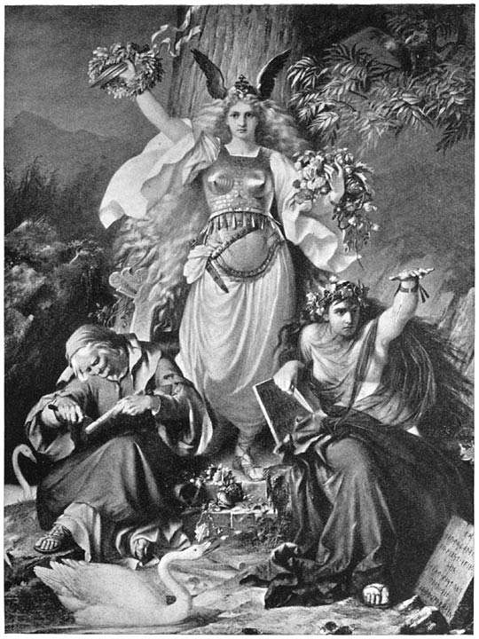
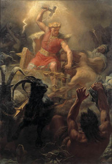

Легендата за норните
Безгрижно и щастливо живеели хората в златния век, но това не продължило дълго. От изток,
от страната на великаните, в Митгард дошли три жени. Едната от тях била стара и грохнала
и се наричала Урд - "миналото", другата била зряла жена и се наричала Верданди - "настоящето",
а третата била съвсем млада и се наричала Скулд - "бъдещето". Тези три жени били прорицателките
норни, вълшебници, надарени със способността да определят съдбата на света, на хората и даже на
боговете.

"Скоро, много скоро жаждата за злато ще проникне в сърцата на хората и тогава
ще свърши златния век" - казала Урд. "Хората ще се убиват и мамят заради златото.
Много славни герои ще бъдат заслепени от блясъка му и ще загинат заради него" - добавила Верданди.
"Да, всичко ще бъде така, но ще мине време и златото ще изгуби властта си над хората и тогава те ще
бъдат отново щастливи." - казала Скулд.
"Жаждата за злато ще завладее не само хората, но и боговете и те също ще проливат
кръв и ще нарушават клетвите си" - отново заговорила Урд. "Великаните ще започнат война с боговете.
Тази война ще продължи много години и ще завърши с гибелта на боговете и великаните." - казала
Верданди. "Да, така ще бъде, но не всички богове ще загинат. Техните деца и онези от тях, които
не са убивали и не са престъпвали клетвите си, ще оживеят и ще управляват новия свят,
който ще възникне след гибелта на стария." - възразила Скулд.
И наистина, всичко в света започнало да става така, както предопределили норните.
В сърцата на хората се зародила алчността. Много от тях оставили мирните си занимания,
хванали мечовете и започнали да воюват. Слънцето в небето продължавало да грее все така,
но хората вече не били така щастливи, както преди. Сбъднало се и другото предсказание - между
боговете и великаните започнала жестока борба, която продължавала векове. Безсилни да се
доберат до Асгард и да победят азите, великаните насочили гнева си към хората. Започнали
да изпращат в Митгард студове и суша, бури и градушки, а понякога спускали от планините огромни
лавини, под които изчезвали цели селища. За да защитят хората от злодеянията им, боговете
издигнали от веждите на Имир пръстен от високи, непроходими гори. Но понякога гигантите
успявали да се промъкнат през него и тежко на онзи, който се изпречвал на пътя им.
Желаейки да погубят света,те изпратили чудовища след слънцето и луната, за да ги погълнат.
Единственият бог-аз, от който великаните се страхували, бил гърмовержеца Тор, който водел всеки
ден безпощадни битки с тях, наказвайки ги за деянията им.
